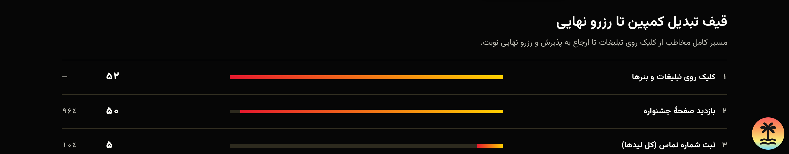
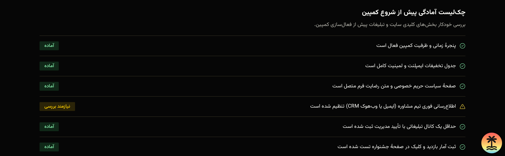
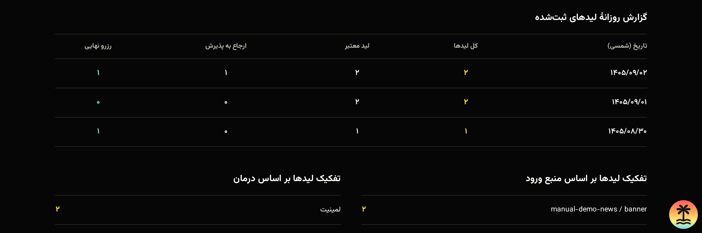

فصل۵
قیف تبدیل، گزارش روزانه و چکلیست پیش از شروع
خواندن قیف تبدیل کمپین
زبانهٔ قیف تبدیل و گزارش تصویر کامل مسیر مخاطب را از نخستین کلیک تا نشستن روی صندلی کلینیک (رزرو نهایی) نشان میدهد.

نکتهٔ کلیدی
هر ردیف ۱ یک مرحله از مسیر مخاطب را نشان میدهد: عدد بزرگ سمت چپ ۲ تعداد افراد در آن مرحله است و درصد کنار آن ۳ نرخ عبور از مرحلهٔ قبلی را بیان میکند.
| مرحله | اگر افت غیرعادی دیدید چه چیزی را بررسی کنید |
|---|---|
| کلیک روی تبلیغات و بنرها ← بازدید صفحهٔ جشنواره | سرعت باز شدن لینک تبلیغ و درست بودن لینک /go/ad/<code> را بررسی کنید. |
| بازدید صفحهٔ جشنواره ← ثبت شماره تماس (کل لیدها) | شفافیت جدول تخفیفات، در دسترس بودن فرم و تطابق وعدهٔ بنر تبلیغاتی با صفحهٔ /black-friday را بررسی کنید. |
| ثبت شماره تماس (کل لیدها) ← لیدهای معتبر | در صورت بالا بودن عدم پاسخ یا انصراف، کیفیت مخاطب کانالهای تبلیغاتی در فصل ۴ را مقایسه کنید. |
| تماس و پیگیری مشاور ← ارجاع به پذیرش ← رزرو نهایی | سرعت تماس نخست تیم مشاوره و بهروزرسانی منظم وضعیتها در فصل ۳ را بررسی کنید. |
چکلیست آمادگی پیش از شروع کمپین
پیش از شروع تاریخ جشنواره و فعال کردن تبلیغات پولی، بخش چکلیست آمادگی پیش از شروع کمپین را بررسی کنید.

نکتهٔ کلیدی
| مورد بررسی | چگونه به وضعیت آماده میرسد |
|---|---|
| پنجرهٔ زمانی و ظرفیت کمپین فعال است | در فصل ۶ کلید فعال بودن کمپین و پذیرش درخواستها را روشن کنید و تاریخ شروع/پایان و ظرفیت را بررسی کنید. |
| جدول تخفیفات ایمپلنت و لمینیت کامل است | مطمئن شوید درصد تخفیف نقدی هر سه ردیف درمان در فصل ۶ بزرگتر از صفر است. |
| صفحهٔ سیاست حریم خصوصی و متن رضایت فرم متصل است | بهصورت خودکار در فرم مشاوره و صفحهٔ /privacy فعال است. |
| اطلاعرسانی فوری تیم مشاوره (ایمیل یا وبهوک CRM) تنظیم شده است | در فصل ۶ دستکم ایمیل اطلاعرسانی فوری تیم مشاوره (اختیاری) یا نشانی وبهوک CRM/PRM (اختیاری) را وارد و ذخیره کنید. |
| حداقل یک کانال تبلیغاتی با تأیید مدیریت ثبت شده است | در فصل ۴ پس از تأیید مدیریت، وضعیت حداقل یک کانال را روی تأیید مدیریت شد یا در حال اجرا بگذارید. |
| ثبت آمار بازدید و کلیک در صفحهٔ جشنواره تست شده است | یک بار صفحهٔ /black-friday یا یکی از لینکهای /go/ad/<code> را باز کنید تا ثبت آمار تأیید شود. |
گزارش روزانهٔ شمسی و تفکیک منابع و درمانها
در نیمهٔ پایینی همین زبانه، عملکرد روزبهروز جشنواره به تاریخ شمسی (وقت تهران) و سهم هر منبع ورود و هر درمان نمایش داده میشود.

- جدول گزارش روزانهٔ لیدهای ثبتشده ۱ به تفکیک هر روز شمسی تعداد کل لیدها، لید معتبر، ارجاع به پذیرش و رزرو نهایی را نشان میدهد.
- بخش تفکیک لیدها بر اساس منبع ورود ۲ نشان میدهد کدام سایت تبلیغاتی یا کدام رسانه بیشترین لید را آورده است.
- بخش تفکیک لیدها بر اساس درمان ۳ سهم تقاضا برای پایه ایمپلنت، ایمپلنت همراه با روکش، لمینیت و مشاورهٔ هر دو را مشخص میکند تا تیم کلینیک ظرفیت یونیتها و پزشکان را هماهنگ کند.
رفع مشکل
| آنچه میبینید | چه باید کرد |
|---|---|
| پیام هنوز دادهای برای نمایش در گزارش ثبت نشده است. دیده میشود. | هنوز لیدی ثبت نشده است؛ به محض ثبت نخستین درخواست در /black-friday، جدول روزانه و تفکیکها بهطور خودکار پر میشوند. |
| تعداد بازدید صفحهٔ جشنواره با تعداد بارگذاریهای پیاپی یک کاربر برابر نیست. | این رفتار عمدی است: برای جلوگیری از آمارسازی کاذب، بازدید هر کاربر در یک نشست مرورگر فقط یک بار شمرده میشود. |
| ردیف ارجاع به پذیرش یا رزرو نهایی در قیف صفر مانده است. | کارشناسان مشاوره و پذیرش باید پس از تماس، وضعیت هر لید را در فصل ۳ به ارجاع به پذیرش و سپس رزرو نهایی تغییر دهند. |